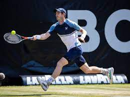

Tenis
o Tenisu
Tenis je sport sa reketima koji igraju dva igrača (singl) ili dva tima od po dva igrača (dubl). Igrači koriste reket za tenis da bi prebacili lopticu u protivnički deo terena preko mreže koja se nalazi na sredini terena. Počeo je da se igra u Engleskoj u 19. veku. Vrlo brzo je počeo da se širi po zemljama u kojima se govori engleski jezik, i to najviše među višim staležom. Tenis je danas Olimpijski sport i igraju ga svi ljudi, nezavisno od društvenog statusa. Pravila igranja su ista još od 90-ih godina 19. veka. Izuzetak je uvođenje taj-brejka (engl. tie-break = „prelom“ izjednačenja) 70-ih godina 20. veka. Tenis je veoma popularan sport koji prate milioni ljudi, a posebno četiri Grend slem turnira (Grand Slam Tournaments).
Istorija
Grci i Rimljani su imali igre loptom, koje su kasnije prihvatili Francuzi. Jednu igru su nazivali Jeu de Paume („že d pom”), što je preteča današnjeg tenisa. Neki stručnjaci smatraju da je ova igra ponikla u Egiptu i Persiji, a da se igrala i kod Arapa, pre Karla Velikog. Oko 1300. godine bila je takođe poznata pod imenom la bud, a u toku 14. veka igrala se u celoj Francuskoj. Luj X je umro od nazeba, koji je dobio igrajući ovu igru. Za tenis se kaže da je kraljevska igra, jer su francuski i engleski kraljevi pokazivali veliko interesovanje za ovu igru.
Reket
Reketi su teniski rekviziti napravljeni od tvrdih materijala poput plastike i metala (aluminijum, željezo ili razne metalne legure). Nekada su se reketi pravili i od drveta, međutim oni su podložni brzom lomljenju i zato su izbačeni iz upotrebe. Reket se sastoji od rama reketa, mreže (string), koja je napravljena od specijalnih elastičnih materijala, te od drške. Reketi se najčešće dele prema tvrdoći, elastičnosti i prema veličini, koja podrazumijeva veličinu mreže merenu u inčima ili milimetrima.
Lopta
Lopta za tenis je izrađena od specijalnih materijala. Prečnik lopte je približno 6,7 cm. Oko 85% mase loptice čini hemijski obrađena guma. Površina lopte izrađena je od posebnih vunenih vlakana – filca. Filc se delimično isparava, te nastaju dlačice na tkanini, koje smanjuju otpor vetra, brzinu i odskok lopte. Lopte su obično žute boje.
